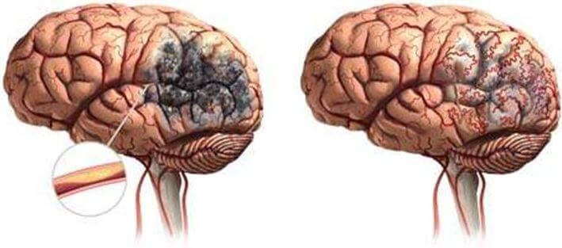

МЕДИЦИНА• ИНСТРУКЦИЯ
Български лекар разказва за рисковете от високо кръвно налягане в напреднала възраст
Какво е идеално за разтваряне на холестеролните плаки и подобряване на кръвообращението?
 |
Милен Иванов |

Милиони хора лекуват хиляди различни заболявания с купища разни лекарства, без дори да осъзнават, че коренът на злото не е там, където е болката. Холестеролът е невидим, той се натрупва тихо, бавно и незабележимо, задушавайки всички жизненоважни органи.
С натрупването на холестерол в организма лавинообразно се увеличава рискът от заболявания, свързани със стеноза или запушване на кръвоносните съдове.
Какви са опасностите от холестеролните плаки?
Натрупването на холестерол в стените на кръвоносните съдове започва активно след 40-годишна възраст, а след 50-годишна възраст това става с изумителна скорост. Възникналите "холестеролни" бариери влошават кръвотока. Постепенно се образува атеросклеротична плака и диаметърът на съда се стеснява. Това значително увеличава риска от блокиране на кръвоносните съдове с кръвен съсирек. Когато това се случи, кръвта спира да тече частично или напълно към даден орган, което води до сериозни нарушения в неговата работата или смърт.

Опасността се крие и в латентното - безсимптомно протичане на заболяването. Състоянието на съдовете непрекъснато се влошава и нарушенията се проявяват едва когато проходимостта в съдовете е намаляла наполовина. Невъзможно е да се каже как точно ще се прояви атеросклерозата; всичко зависи от това кой орган е бил лишен от необходимото хранене. Най-често атеросклерозата засяга съдовете на сърцето, червата, мозъка, аортата, бъбреците, долните крайници и панкреаса.
Натрупването на холестерол (атеросклероза) оказва разрушително въздействие върху всички органи и системи на тялото. Единственият въпрос е кой орган ще бъде "най-слабото звено" и няма да оцелее пръв.
7 цели на холестерола
Атеросклероза на аортата
Атеросклерозата на аортата засяга най-голямата артерия в тялото. Аортата прилича на ствол, от който се разклоняват други по-малки съдове.
Аортата включва 2 участъка:
- Гръден
- Коремен
Гръдната част кръвоснабдява органите в гръдния кош, както и главата и шията.
Коремната аорта насочва кръвта към органите, разположени в корема и долните крайници.
Заболяването се развива на 2 етапа:
- В началния стадий няма външни прояви на заболяването. Но вече съществуващи усложнения могат да бъдат открити чрез лабораторни тестове.
- Клиничният период е придружен от ясно изразени признаци на заболяването.
Атеросклероза на гръдната аорта
В началния етап патологията не е придружена от никакви симптоми. Първите симптоми обикновено са болки в гърдите, които са с прекъсвания. Болката може да намалее, да се усили и да не изчезне в продължение на няколко дни. Често е придружена от чувство за недостиг на въздух.
Други симптоми са повишено кръвно налягане и развитие на хипертония.
Ако аортната дъга е значително увредена, се появяват затруднения при преглъщане и гласът става дрезгав. Атеросклеротичните поражения на гръдната аорта могат да бъдат придружени от окосмяване по ушите. По лицето се появяват мастни лезии, наблюдава се преждевременно побеляване на косата.
Други симптоми на увреждане на торакалната(гръдната) аорта:
- болка, отиваща към ръката, шийния и лумбалния отдел на гръбначния стълб;
- Повишено кръвно налягане;
- потупване между ребрата от дясната страна на гръдния кош;
- шум в главата;
- виене на свят;
- болка във врата, когато се опитвате да обърнете главата си.
На фона на недостатъчното кръвоснабдяване на сърцето се развиват следните патологии:
- аритмия;
- сърдечна недостатъчност;
- стенокардия;
- сърдечен пристъп.
Лезиите(уврежданията на тъканта) на гръдната аорта често се комбинират с атеросклеротични лезии на коронарните артерии и мозъчни съдови лезии.
Атеросклероза на коремната аорта
Атеросклеротичното увреждане на коремната аорта се придружава от нарушения в храносмилателната система и се проявява със следните симптоми:
- Коремна болка. Те имат характер на пристъп. Често пациентът не може да определи точното място на болката;
- Стомашни нарушения;
- Метеоризъм;
- Киселини;
- Оригване и горчивина;
- Тромбоза на висцералната артерия. Опасно усложнение, което може да бъде фатално. То е съпроводено с некротизиране на част червата и обширно възпаление. Състоянието е съпроводено с много силна болка, която не може да бъде облекчена с болкоуспокояващи.
В резултат на образуването на плаки в тази област се нарушава кръвоснабдяването на тазовите органи. Последващите усложнения могат да включват бъбречна недостатъчност и заболяване на висцералните артерии.
Кръвоносни съдове на мозъка
Холестеролът, който води до мозъчна атеросклероза, разрушава както вътречерепните, така и извъчерепните съдове. Интензивността на патологичните симптоми е пряко свързана със степента и местоположението на лезиите.
В допълнение към най-опасното усложнение на инсулта може да се наблюдава потискане на централната нервна система, развитие на психични разстройства, увреждане на зрението и паметта.

Първите признаци на увреждане се появяват още в зряла възраст - 40-45 години.
На този етап е възможна проявата на "исхемични пристъпи", съпроводени с увреждане на чувствителността, нарушения на координацията, аномалии на зрението, слуха и говора. Въпреки сериозността на симптомите, през този период те са краткотрайни, обратими и изчезват от само себе си след еднократно прочистване на съдовете с нутрацевтици(хранителни добавки от нов тип).
Тежките атеросклеротични лезии могат да доведат до инсулт, т.е. до некроза на мозъчната тъкан. Симптомите са същите като в предишния случай, но няма значително подобрение след некрозата.
Мозъкът е отговорен и за висшите умствени функции. Ето защо образуването на плаки води и до влошаване на интелекта и паметта, промени в характера (лабилност на настроението, капризност, мързел). При липса на терапевтични мерки за освобождаване на кръвоносните съдове от плаките, това увреждане води до развитие на деменция, болестта на Алцхаймер. Тези усложнения са опасни и могат да доведат до инвалидност или смърт.
Съществуват 2 вида инсулт:
- исхемичен;
- хеморагичен.
Инсултът е достигнал възрастовата граница. Той вече не се свързва със старостта. Исхемията се дължи на запушване на съдовото легло от тромб, а причината за кръвотечението е разкъсване на мозъчните съдове.
Сърце
Една от причините за смъртта на пациенти със сърдечно-съдови заболявания на фона на натрупването на холестерол в съдовете е запушването на основната коронарна артерия.
Заболявания като коронарна болест на сърцето, стенокардия и инфаркт на миокарда са свързани с тези уврежвания.
Исхемичната болест на сърцето е тежка сърдечна патология, която представлява цял комплекс от нарушения. Включва стенокардия, инфаркт на миокарда и кардиосклероза.
Най-често исхемичната болест на сърцето се проявява чрез стенокардия. На ранен етап проявите са под формата на болка в гърдите се усещат само по време на физическо натоварване. Това е логично, тъй като в покой сърцето се нуждае от по-малко кислород, а при интензивна дейност тези нужди се увеличават. Подобна реакция може да има и по време на стрес, емоционален стрес. С развитието на атеросклерозата и увеличаването на плаките в диаметъра на съдовете, исхемичната болест става все по-изразена. При по-късните стадии на заболяването всяко движение на пациента вече причинява болка.
Класическите признаци на стенокардия включват:
- появата на болка както при стрес, така и в състояние на покой;
- болката се усеща зад гръдната кост и може да се премести към рамото (от лявата страна), лопатката, ръката. Освен това интензивността
- на болката е пряко свързана с тежестта на пристъпа;
- остра, смазваща болка;
- пристъпът може да бъде овладян чрез приемане на таблетка нитроглицерин;
- продължителността на атаката ще бъде намалена: не повече от 5 минути.
Разлики между сърдечен удар и стенокардия
- болка с много висока интензивност;
- продължителността на атаката е най-малко 20 минути;
- нитроглицеринът не помага при инфаркт на миокарда;
- болките са дифузни.
Плаката, причинена от висок холестерол, може да доведе до внезапна смърт на пациента. Тази ситуация се развива, когато сърдечната честота се променя първо поради прекъсване на кръвоснабдяването, а след това сърцето спира.
Всички съдови заболявания на сърцето са сериозни и опасни. Без пълноценното функциониране на сърцето другите органи не могат да функционират нормално. Атеросклерозата на сърдечните съдове също може да доведе до инфаркт на миокарда. Сърдечен удар се причинява от спукана плака и запушване на кръвоносния съд от тромб. В резултат на това кръвта спира да тече към определена област на сърдечния мускул и той умира.
След развитието на нарушена съкращаемост на сърдечния мускул смъртта настъпва в рамките на няколко часа или дни. Въпреки това, дори ако човек бъде спасен, той все още има нарушено кръвоснабдяване, което, без да се изчистят кръвоносните съдове от холестерол, рано или късно ще доведе до втори пристъп. Ето защо прочистването на кръвоносните съдове с нутрацевтици(хранителни добавки от нов тип) е жизненоважно за пациенти, претърпели сърдечен удар(инфаркт).
Освен това на фона на нарушаване на кръвообращението се развива хипертония. Това е придружено от сърдечна дисфункция, патологични процеси на централната нервна система и бъбреците.
Хипертонията се появява и на фона на лезии на мозъка, бъбреците, периферните кръвоносни съдове. При патология на мозъка тя се проявява като нарушено съзнание, загуба на зрение и нарушена бъбречна функция, което води до бъбречна недостатъчност.
Съдове на долните крайници
Комплексът от симптоми на пораженията на долните крайници, които водят до отлагане на холестерол, включва:
- податливост на долните крайници на студ;
- спазми;
- куцане;
- трофични язви, съдова "мрежа" и "звездички", възникващи след кожни увреждания;
- варикозно разширени вени;
- болка, която може да се появи както по време на активност, така и в покой (може да варира по интензивност);
- разрушаване на хрущялната тъкан, развитие на остеоартрит.
В допълнение към болезнените усещания има нарушения на опорно-двигателния апарат. Проявите са подобни на тези при сърдечно заболяване: в началния етап болката се появява само при голямо физическо натоварване и дълги разходки. В последния етап болките стават непоносими дори в състояние на покой.
Периодичното накуцване е основният симптом при появата на съдови лезии(увреждания). Болезнените усещания се локализират главно в мускулите на бедрото и прасците.
Недостатъчното кръвоснабдяване на долните крайници води до бледност и изтръпване на кожата, а космите по краката започват да падат. Образуваните язви се лекуват изключително трудно, тъй като регенеративните процеси не са напълно активирани поради липсата на кръвоснабдяване. В резултат на тези промени рано или късно започва гангрена: тъканите умират. Приемането на лекарства на този етап е неефективно. Гангрената може да се излекува само чрез ампутация.
Лечението включва, в допълнение към приемането на хранителни добавки, предназначени за борба с атеросклерозата, още физиотерапия и спа процедури.
Бъбречни артерии
При атеросклеротични лезии на съдовете, кръвоснабдяващи бъбреците, се развива вторична артериоза. Характерните прояви са оток, който се образува в резултат на задържане на натрий в организма, като най-тежката ситуация е развитието на белодробен оток. Една от последиците е бъбречен инфаркт. Когато е засегнат бъбрекът, симптомите на заболяването не са ясно изразени.
Блокирането на бъбречната артерия от холестерол води до остра бъбречна недостатъчност.
Основните прояви на атеросклероза на бъбречните артерии са:
- хипертония;
- оток;
- локализирана болка в гърба;
- слабост, загуба на сили.
Как да се избавим от атеросклеротичните плаки?
Лечението се основава на системно почистване на кръвоносните съдове. Поне веднъж на всеки 5 години, като се започне от 40 години за мъжете и от 45 за жените.
Доскоро беше невъзможно да се отървем от съществуващите атеросклеротични плаки; терапията се основаваше на забавяне на образуването на нови плаки.
Но всичко това се промени с откриването на нутрацевтиците.
Съвременните средства за борба с холестеролните плаки (нутрацевтиците) дават възможност да се почистят кръвоносните съдове в домашни условия без наблюдение от специалисти. Основното изискване е да се спазва продължителността на курса на лечение. Ефективната продължителност на лечението е 1,5 месеца.
Нутрацевтиците премахват от 89 % до 97 % от холестеролните отлагания по кръвоносните съдове, артериите и капилярите в рамките на 1,5 месеца. (Около 3,7 кг)
Какво представляват капките Cardiofort?
Капките Cardiofort това са най-новият клас препарати за лечение и профилактика на съдовата атеросклероза.
Капките Cardiofort съчетават безопасност и висока ефективност в борбата с холестеролните отлагания.
Капките Cardiofort са одобрени за самостоятелно приемане при лечение на атеросклероза и последиците от нея.
Натуралните капки Cardiofort напълно елиминират страничните ефекти и усложненията, за това се препоръчват както за възрастни хора, така и за хора с хронични заболявания.
Как действат нутрацевтиците върху организма?
Капките Cardiofort действат в 3 етапа:
- 1. Елиминиране на холестеролните отлагания. Разтваря атеросклеротичните плаки, кръвните съсиреци и калциевите натрупвания. Увеличава проходимостта на кръвоносните съдове и възстановява кръвообращението.
- 2. Премахване на последиците от недостатъчната циркулация на кръвта. Хипертонията, главоболието, разширените вени, диабетът от 2-и тип, тромбозата и хемороидите са напълно или значително излекувани. Шумът в ушите, световъртежът изчезват, остротата на зрението и яснотата на ума се подобряват.
- 3. Подобряване здравината и еластичността на стените на кръвоносните съдове. Предотвратява се образуването на нови плаки и 11 пъти намалява рискът от инсулт.
«Cardiofort»

Капките "Cardiofort" днес са съвременен нутрацевтик от пето поколение с уникален ефект, който разтваря до 97% от холестеролните отлагания и удвоява просвета на кръвоносните съдове, като възстановява кръвообращението.
Действието се основава на способността на активните молекули на веществото да проникват в атеросклеротичните плаки през фиброзната обвивка. Този ефект осигурява разтваряне на холестеролните отлагания, което доскоро беше невъзможно.
Приемането на капките Cardiofort в продължение на 2 месеца 2 пъти дневно на гладно дава следните резултати:
- Елиминира до 97% от атеросклеротичните плаки.
- Укрепва стените на кръвоносните съдове.
- Нормализира кръвното налягане.
- Стабилизира нивата на кръвната захар.
- Възстановява функционалната активност на мозъка и нервната система.
- Спира процеса на стареене на сърдечния мускул.
- Намалява риска от инфаркт на миокарда.
- Засилва антиоксидантната бариера.
- Подобрява коронарното и мозъчното кръвообращение.
- Нормализира минералния метаболизъм в сърдечния мускул.
Убедете се сами
Капки Cardiofort
Пациент
жена на 67 години. В началото на терапията има обширни лезии на гръдната и коремната аорта с холестеролни отлагания. Нарушено е кръвообращението на коремните органи, белите дробове и бронхите.
жена на 67 години. В началото на терапията има обширни лезии на гръдната и коремната аорта с холестеролни отлагания. Нарушено е кръвообращението на коремните органи, белите дробове и бронхите.
Съпътстващи усложнения:
Хипертония III степен, оток на долните крайници, разширени вени, аритмия, преддиабетно състояние.
Хипертония III степен, оток на долните крайници, разширени вени, аритмия, преддиабетно състояние.
Оплаквания на пациента:
главоболие, замайване, шум в ушите, болки в краката и крампи, проблеми със съня, високо кръвно налягане.
главоболие, замайване, шум в ушите, болки в краката и крампи, проблеми със съня, високо кръвно налягане.
Рецепта:
Капки Cardiofort 2 пъти на ден на гладно. Контролен преглед след 30 дни и 60 дни.
Капки Cardiofort 2 пъти на ден на гладно. Контролен преглед след 30 дни и 60 дни.
Обща ангиограма на съдовете на пациента
Резултати от лечението
Според резултатите от 2-месечната терапия с капките Cardiofort, Бяха получени следните резултати
- Кръвното налягане се нормализира: 130-139 \ 85-89, което е крайната граница на нормата
- Няма отоци.
- Нивото на захарта не надвишава 5,5 mmol / l.
- Не се наблюдават прояви на разширени вени.
- Няма аритмия, пулс 73 удара в минута.
- Главоболието и шумът в ушите спират да безпокоят след първата седмица от приема на лекарството.
- Сънят се нормализира.
- Повишена острота на зрението.
- Общият тонус и самочувствието са се подобрили значително
Кръвоснабдяването на мозъка е възстановено
Пациент
мъж на 51 години. В началото на терапията се наблюдава значителна обструкция на мозъчното кръвообращение.
мъж на 51 години. В началото на терапията се наблюдава значителна обструкция на мозъчното кръвообращение.
Свързани с това усложнения:
Високо кръвно налягане, замъглена роговица, цервикална и гръдна остеохондроза, хроничен простатит, остри хемороиди, хипергликемия.
Високо кръвно налягане, замъглена роговица, цервикална и гръдна остеохондроза, хроничен простатит, остри хемороиди, хипергликемия.
Оплакване на пациента: главоболие
замъглено зрение. Обща слабост и апатия, нежелание да се прави каквото и да било. Ниска ефективност, неспособност за концентрация за дълго време, липса на енергия.
замъглено зрение. Обща слабост и апатия, нежелание да се прави каквото и да било. Ниска ефективност, неспособност за концентрация за дълго време, липса на енергия.
Рецепта:
Капки Cardiofort 2 пъти на ден на гладно. Контролен преглед след 30 дни и 60 дни.
Капки Cardiofort 2 пъти на ден на гладно. Контролен преглед след 30 дни и 60 дни.
Резултати от лечението
Месец и половина лечение с капките Cardiofort даде следните резултати:
- Кръвното налягане е напълно в нормата.
- Стабилизирани нива на захарта.
- Главоболието изчезва.
- Повишена ефективност и активност.
- Енергията се е повишила значително.
- Гемороидите изчезнаха.
- Няма вече болки в гърба, врата и ставите.
- Повишена зрителна острота.
- Няма симптоми на простатит.
Съществен недостатък на Cardiofort
Единственият и всъщност основният недостатък на нутрацевтика Cardiofort е неговата цена.
Това е напълно логично, тъй като нутрацевтиците са продукти с високи производствени разходи. Естественият състав е много взискателен по отношение на условията на съхранение и обработка, което значително увеличава производствените разходи.
В повечето аптечни мрежи Cardiofort не се предлага просто защото е скъп. А лекарите не поемат риска да предписват толкова скъпо лекарство.
Веднъж годишно производителят на Cardiofort заедно с Международната комисия по холестерола организират Ден на бонуса. Всички хора, които се нуждаят от почистване на кръвоносните съдове, понижаване на кръвната захар и кръвното налягане, могат да получат Cardiofort с отстъпка.
Запомнете тази дата:
- Това е международния ден за борба с холестерола.
На този ден можете да поръчате капките Cardiofort с отстъпка, но трябва да отговаряте няколко условия.
Условия за 50% ОТСТЪПКА на Cardiofort:
- Само за лична употреба
Това се прави, за да се избегнат контакти с търговски посредници, които се опитват да купуват ПРОДУКТА на едро и да го препродават по свои собствени правила. - Оставете заявка чрез официалния сайт.
Покупката чрез официалния уебсайт е гаранция за качество и защита от прекупвачи.
Затова не отлагайте, а поръчайте Cardiofort още сега. Защото на следващия ден няма да можете да закупите стоката с отстъпка.
ОТЗИВИ